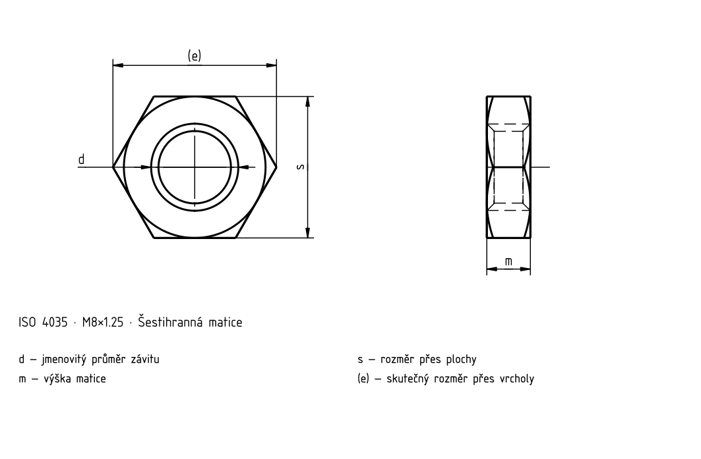

Šestihranné matice nízké se sražením výrobní třída A a B
Historický podklad; číselné hodnoty a výjimky nejsou úplně ověřené proti platné normě.

Šestihranné matice nízké se sražením výrobní třída A a B
| d | Rozteč P | d _a max. | d _a min. | d _w min. | e _min. | m _max. | m _min. | m' _min. | s _max. | s _min. |
|---|---|---|---|---|---|---|---|---|---|---|
| M1,6 | 0,35 | 1,84 | 1,6 | 2,4 | 3,41 | 1 | 0,75 | 0,6 | 3,2 | 3,02 |
| M2 | 0,4 | 2,3 | 2,0 | 3,1 | 4,32 | 1,2 | 0,95 | 0,8 | 4 | 3,82 |
| M2,5 | 0,45 | 2,9 | 2,5 | 4,1 | 5,45 | 1,6 | 1,35 | 1,1 | 5 | 4,82 |
| M3 | 0,5 | 3,45 | 3,0 | 4,6 | 6,01 | 1,8 | 1,55 | 1,2 | 5,5 | 5,32 |
| (M3,5) | 0,6 | 4,0 | 3,5 | 5,1 | 6,58 | 2 | 1,75 | 1,4 | 6 | 5,82 |
| M4 | 0,7 | 4,6 | 4,0 | 5,9 | 7,66 | 2,2 | 1,95 | 1,6 | 7 | 6,78 |
| M5 | 0,8 | 5,75 | 5,0 | 6,9 | 8,79 | 2,7 | 2,45 | 2 | 8 | 7,78 |
| M6 | 1 | 6,75 | 6,0 | 8,9 | 11,05 | 3,2 | 2,9 | 2,3 | 10 | 9,78 |
| M8 | 1,25 | 8,75 | 8,0 | 11,6 | 14,38 | 4 | 3,7 | 3 | 13 | 12,73 |
| M10 | 1,5 | 10,8 | 10,0 | 14,6 | 17,77 | 5 | 4,7 | 3,8 | 16 | 15,73 |
| M12 | 1,75 | 13,0 | 12,0 | 16,6 | 20,03 | 6 | 5,7 | 4,6 | 18 | 17,73 |
| (M14) | 2 | 15,1 | 14,0 | 19,6 | 23,35 | 7 | 6,42 | 5,1 | 21 | 20,67 |
| M16 | 2 | 17,3 | 16,0 | 22,5 | 26,75 | 8 | 7,42 | 5,9 | 24 | 23,67 |
| (M18) | 2,5 | 19,5 | 18,0 | 24,9 | 29,56 | 9 | 8,42 | 6,7 | 27 | 26,16 |
| M20 | 2,5 | 21,6 | 20,0 | 27,7 | 32,95 | 10 | 9,1 | 7,3 | 30 | 29,16 |
| (M22) | 2,5 | 23,7 | 22,0 | 31,4 | 37,29 | 11 | 9,9 | 7,9 | 34 | 33 |
| M24 | 3 | 25,9 | 24,0 | 33,2 | 39,55 | 12 | 10,9 | 8,7 | 36 | 35 |
| (M27) | 3 | 29,1 | 27,0 | 38,0 | 45,2 | 13,5 | 12,4 | 9,9 | 41 | 40 |
| M30 | 3,5 | 32,4 | 30,0 | 42,8 | 50,85 | 15 | 13,9 | 11,1 | 46 | 45 |
| (M33) | 3,5 | 5,6 | 33,0 | 46,6 | 55,37 | 16,5 | 15,4 | 12,3 | 50 | 49 |
| M36 | 4 | 38,9 | 36 | 51,1 | 60,79 | 18 | 16,9 | 13,5 | 55 | 53,8 |
| (M39) | 4 | 42,1 | 39 | 55,9 | 66,44 | 19,5 | 18,2 | 14,6 | 60 | 58,8 |
| M42 | 4,5 | 45,4 | 42 | 60 | 71,3 | 21 | 19,7 | 15,8 | 65 | 63,1 |
| (M45) | 4,5 | 48,6 | 45 | 64,7 | 76,95 | 22,5 | 21,2 | 17 | 70 | 68,1 |
| M48 | 5 | 51,8 | 48 | 69,5 | 82,6 | 24 | 22,7 | 18,2 | 75 | 73,1 |
| (M52) | 5 | 56,2 | 52 | 74,2 | 88,25 | 26 | 24,7 | 19,8 | 80 | 78,1 |
| M56 | 5,5 | 60,5 | 56 | 78,7 | 93,56 | 28 | 26,7 | 21,4 | 85 | 82,8 |
| (M60) | 5,5 | 64,8 | 60 | 83,4 | 99,21 | 30 | 28,7 | 23 | 90 | 87,8 |
| M64 | 6 | 69,1 | 64 | 88,2 | 104,86 | 32 | 30,4 | 24,3 | 95 | 92,8 |
Šestihranné matice nízké se sražením výrobní třída A a B · Normový kontext
| Položka | Hodnota |
|---|---|
| Normový kontext | ISO 4035:2023 |
| Výrobní třída | — |
| Pevnostní třída | Úplné znění normy je potřeba k ověření rozměrů, tolerancí a všech podmínek. |
Šestihranné matice nízké se sražením výrobní třída A a B
| d | Rozteč P | d _a max. | d _a min. | d _w min. | e _min. | m _max. |
|---|---|---|---|---|---|---|
| M1,6 | 0,35 | 1,84 | 1,6 | 2,4 | 3,41 | 1 |
| M2 | 0,4 | 2,3 | 2,0 | 3,1 | 4,32 | 1,2 |
| M2,5 | 0,45 | 2,9 | 2,5 | 4,1 | 5,45 | 1,6 |
| M3 | 0,5 | 3,45 | 3,0 | 4,6 | 6,01 | 1,8 |
| (M3,5) | 0,6 | 4,0 | 3,5 | 5,1 | 6,58 | 2 |
| M4 | 0,7 | 4,6 | 4,0 | 5,9 | 7,66 | 2,2 |
| M5 | 0,8 | 5,75 | 5,0 | 6,9 | 8,79 | 2,7 |
| M6 | 1 | 6,75 | 6,0 | 8,9 | 11,05 | 3,2 |
| M8 | 1,25 | 8,75 | 8,0 | 11,6 | 14,38 | 4 |
| M10 | 1,5 | 10,8 | 10,0 | 14,6 | 17,77 | 5 |
| M12 | 1,75 | 13,0 | 12,0 | 16,6 | 20,03 | 6 |
| (M14) | 2 | 15,1 | 14,0 | 19,6 | 23,35 | 7 |
| M16 | 2 | 17,3 | 16,0 | 22,5 | 26,75 | 8 |
| (M18) | 2,5 | 19,5 | 18,0 | 24,9 | 29,56 | 9 |
| M20 | 2,5 | 21,6 | 20,0 | 27,7 | 32,95 | 10 |
| (M22) | 2,5 | 23,7 | 22,0 | 31,4 | 37,29 | 11 |
| M24 | 3 | 25,9 | 24,0 | 33,2 | 39,55 | 12 |
| (M27) | 3 | 29,1 | 27,0 | 38,0 | 45,2 | 13,5 |
| M30 | 3,5 | 32,4 | 30,0 | 42,8 | 50,85 | 15 |
| (M33) | 3,5 | 5,6 | 33,0 | 46,6 | 55,37 | 16,5 |
| M36 | 4 | 38,9 | 36 | 51,1 | 60,79 | 18 |
| (M39) | 4 | 42,1 | 39 | 55,9 | 66,44 | 19,5 |
| M42 | 4,5 | 45,4 | 42 | 60 | 71,3 | 21 |
| (M45) | 4,5 | 48,6 | 45 | 64,7 | 76,95 | 22,5 |
| M48 | 5 | 51,8 | 48 | 69,5 | 82,6 | 24 |
| (M52) | 5 | 56,2 | 52 | 74,2 | 88,25 | 26 |
| M56 | 5,5 | 60,5 | 56 | 78,7 | 93,56 | 28 |
| (M60) | 5,5 | 64,8 | 60 | 83,4 | 99,21 | 30 |
| M64 | 6 | 69,1 | 64 | 88,2 | 104,86 | 32 |
Šestihranné matice nízké se sražením výrobní třída A a B
| d | m _min. | m' _min. | s _max. | s _min. |
|---|---|---|---|---|
| M1,6 | 0,75 | 0,6 | 3,2 | 3,02 |
| M2 | 0,95 | 0,8 | 4 | 3,82 |
| M2,5 | 1,35 | 1,1 | 5 | 4,82 |
| M3 | 1,55 | 1,2 | 5,5 | 5,32 |
| (M3,5) | 1,75 | 1,4 | 6 | 5,82 |
| M4 | 1,95 | 1,6 | 7 | 6,78 |
| M5 | 2,45 | 2 | 8 | 7,78 |
| M6 | 2,9 | 2,3 | 10 | 9,78 |
| M8 | 3,7 | 3 | 13 | 12,73 |
| M10 | 4,7 | 3,8 | 16 | 15,73 |
| M12 | 5,7 | 4,6 | 18 | 17,73 |
| (M14) | 6,42 | 5,1 | 21 | 20,67 |
| M16 | 7,42 | 5,9 | 24 | 23,67 |
| (M18) | 8,42 | 6,7 | 27 | 26,16 |
| M20 | 9,1 | 7,3 | 30 | 29,16 |
| (M22) | 9,9 | 7,9 | 34 | 33 |
| M24 | 10,9 | 8,7 | 36 | 35 |
| (M27) | 12,4 | 9,9 | 41 | 40 |
| M30 | 13,9 | 11,1 | 46 | 45 |
| (M33) | 15,4 | 12,3 | 50 | 49 |
| M36 | 16,9 | 13,5 | 55 | 53,8 |
| (M39) | 18,2 | 14,6 | 60 | 58,8 |
| M42 | 19,7 | 15,8 | 65 | 63,1 |
| (M45) | 21,2 | 17 | 70 | 68,1 |
| M48 | 22,7 | 18,2 | 75 | 73,1 |
| (M52) | 24,7 | 19,8 | 80 | 78,1 |
| M56 | 26,7 | 21,4 | 85 | 82,8 |
| (M60) | 28,7 | 23 | 90 | 87,8 |
| M64 | 30,4 | 24,3 | 95 | 92,8 |
Šestihranné matice nízké se sražením výrobní třída A a B · Normový kontext
| Položka | Hodnota |
|---|---|
| Normový kontext | ISO 4035:2023 |
| Výrobní třída | — |
| Pevnostní třída | Úplné znění normy je potřeba k ověření rozměrů, tolerancí a všech podmínek. |